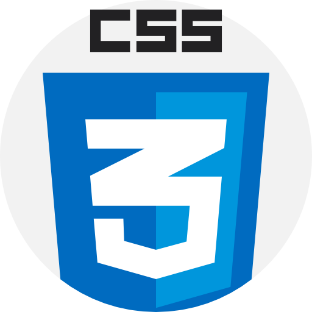
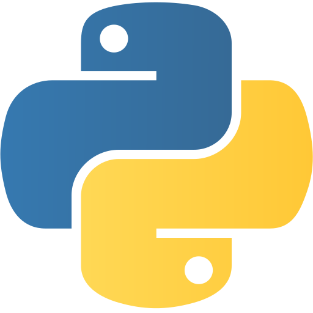
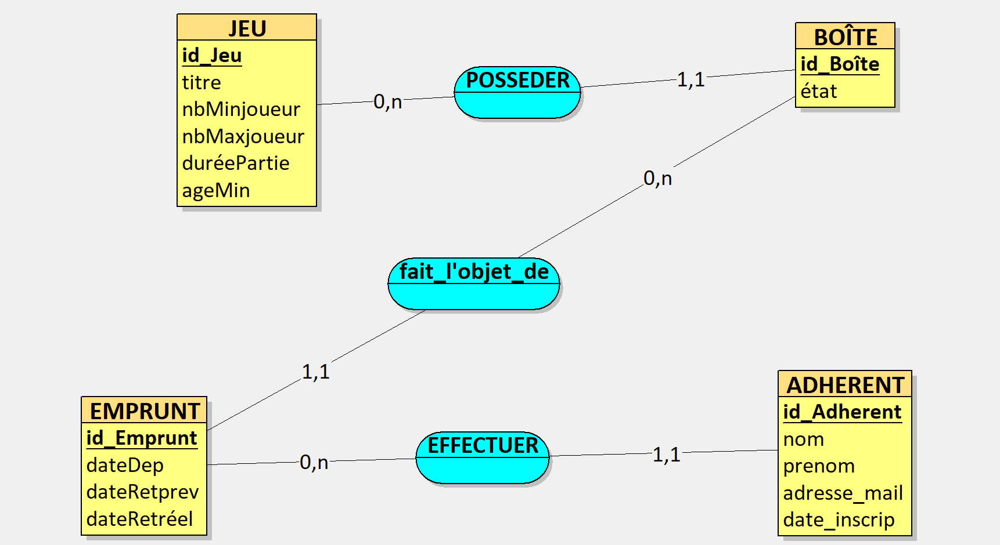

~ Jiomi FENEUS ~
Étudiant en première année d'informatique
À PROPOS DE MOI
Bonjour et bienvenue sur mon portfolio. Je m'appelle FENEUS Jiomi et je suis actuellement étudiant en première année de BUT informatique à l'IUT d'Orsay, au sein de l'Université de Paris-Saclay.
Ayant toujours eu une forte attirance pour l'informatique et tout l'environnement qui l'entoure, depuis de nombreuses années, je me suis alors dirigé vers un BAC avec les spécialités Mathématiques et NSI (Numérique Science Informatique) afin d'en découvrir un peu plus sur le milieu informatique. Par la suite, après l'obtention du Bac en 2026, j'ai choisi de poursuivre mes études en BUT informatique afin de développer mes connaissances et mes compétences dans ce domaine.
Á travers les cours et les travaux pratiques, je découvre actuellement la programmation, les bases de données et les systèmes informatiques. Étant encore au début de mon apprentissage, je construis progressivement mes compétences, notamment en HTML, CSS, C++, SQL et sous Linux.
Ainsi, ce portfolio évoluera tout au long de mon parcours en BUT informatique: j'y présenterais mes premières réalisations et tout ce qu'elles m'auront permis d'apprendre.
Compétences
Développement web

Programmation

Bases de données
Systèmes et outils

Mes Projets
Gestion des prêts de jeux de société:
Conception d’une base de données pour un micro-entreprise fictive : gestion des adhérents, des jeux et des emprunts.
Réalisation du MCD et du schéma relationnel, jointures SQL, recherche des retards et des boîtes disponibles.
Technologies : SQL · SQLite
Voir le code sur GitHub